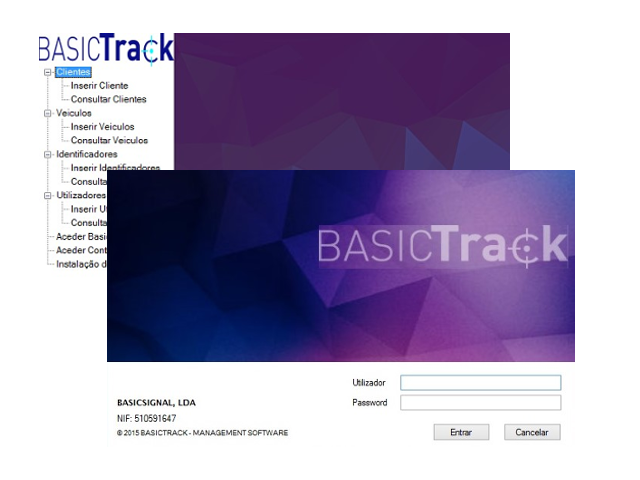

Computing
Computing is a really big area with many specializations, the field of computing includes computer engineering, software engineering, computer science, information systems, and information technology. So, as I never knew well where I fit, I opted for it for allowing me to learn a little of all areas.
Computing includes:
- designing, developing and building hardware and software systems;
- processing, structuring, and managing various kinds of information
- doing scientific research on and with computers
- making computer systems behave intelligently;
- creating and using communications and entertainment media.
Although it includes all of that, the part that most captivates me is programming maybe because I already did internships and projects in that field.
My projects

Vehicle Management Software - developed during my internship at the company BasicSignal in 2015
Problem Solving class - first assignment